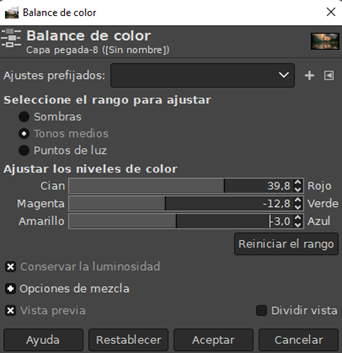
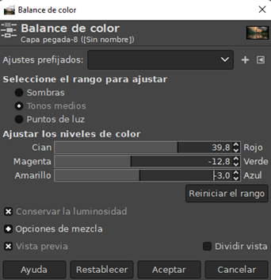
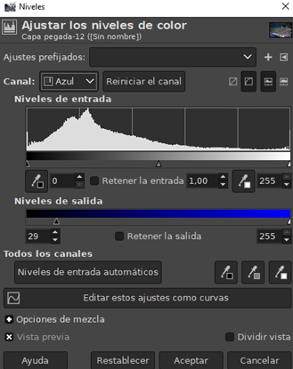
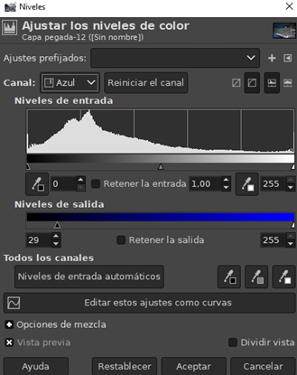

Corrige problemas de la iluminación en imágenes y realza colores con el contraste.
Al mover la curva, se pueden solucionar problemas de tonalidades en las imágenes donde predomina un color.

Modifica las imágenes que tienen un exceso o falta de color. Se puede utilizar para cambiar los colores y crear imágenes muy llamativas.

Cambia la intensidad de los colores primarios. Los rasgos que se pueden ajustar son las sombras, los puntos de luz y los tonos medios.
 

Crea el efecto de visualización de la imagen a través de un cristal coloreado. Se utiliza para conseguir un tono cálido, sepia, etc.

Permite regular la luminosidad y la gama de la imagen. Es ideal para corregir imágenes muy oscuras o claras.
 

Potente herramienta para la creación de efectos especiales. Permiten enfocar imágenes, cambiar la textura, simular efectos de pintura, etc.
Pixelar:
Ojos rojos:
Desenfoque:

Mosaico:

Desentrelazar:

GIMP (GNU Image Manipulation Program) es un editor gráfico multiplataforma, libre y gratuito con una interfaz bastante sencilla de usar. Este posee unas características muy avanzadas, que permiten crear gráficos, editar imágenes, retocar fotografías, etc.
Su interfaz aparece por defecto en ventanas flotantes, pero podemos cambiarlo a Modo ventana única desde el menú Ventana.
Copyright 2023, all rights reserved